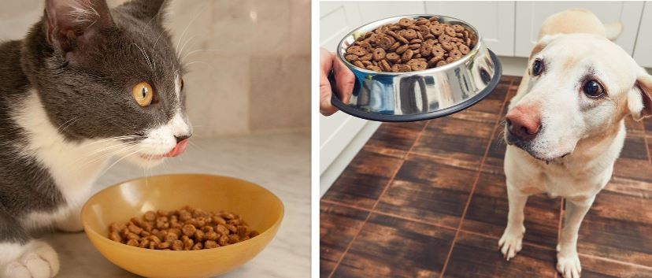
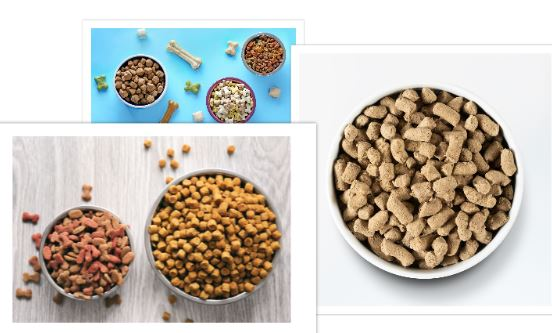

Can dogs eat cat food? The Truth
Yes, dogs can eat cat food. However, dogs will not get the necessary nutrients and vitamins to keep them in tip-top shape health-wise if they are only fed cat food.
Nutritional Requirements of Dogs
When you are discussing nutrition for dogs, there are 6 fundamental nutrients that are gone over: protein, water, fat, minerals, carbs, and vitamins. Canines require all 6 of these nutrients, because they are omnivores, however in differing quantities. Cats have various requirements, given that they are from a line of carnivorous predators.
Substantial research has actually been done over the past years to identify what is nutritionally helpful to a dog so that dog food companies have the ability to understand how to create their perfect foods. If your dog food has a AAFCO seal on it, then it follows the suggested standards for creating a well balanced and complete dog food. These standards vary for canines and felines.
Because dietary requirements are based on various life phases, illness, and the weight of a pet, various foods that are created for various pets might have various quantities of the 6 fundamental nutrients in them. This is why feeding your dog food that follows AAFCO standards is the easiest and best thing you can do to offer needed nutrition to your dog.
Different types of cat and dog foods
Canine and feline foods come in a range of various bundles and solutions. Wet or canned food, damp pouches, freeze dried, cooled fresh, dry kibble, and even dehydrated foods are all readily available for your pets.
Which type of food should dogs eat?
Many dogs are fed dry kibble that follows AAFCO standards however the growing number of specialized food alternatives has actually drawn some pet owners away from the conventional canine food bags. Many every canine food you see in an pet shop will follow AAFCO standards so as long as you select a food developed for a dog and their particular requirements, you will be supplying correct nutrition unless they have a medical condition needing supplements.
What if my Dog Accidentally Eats Cat Food?
If a dog inadvertently consumes cat food then there is no instant cause for issue. Cat food is not poisonous to dogs, however it is most likely to trigger vomiting or diarrhea. If your pet dog consumes an incredibly big quantity of feline food, bloat is the greatest issue. A Dog's stomach can fill with air and food and trigger bloat, which can be deadly. A puffed up abdominal area and throwing up without anything coming out are indications that your canine might be experiencing bloat. If this is presumed, you should call your vet instantly.
Conclusion
We have gone over the question of whether or not your dog can eat bacon and can bacon kill dogs among other questions. After reading this blog posts, there should be a firm understanding of why feeding your dog bacon would be a bad idea. There are many other alternatives to feeding your dog bacon and I know your dog will love them too. Alternatives such as vegetables or certain types of dog treats are tasty and healthy at the same time.